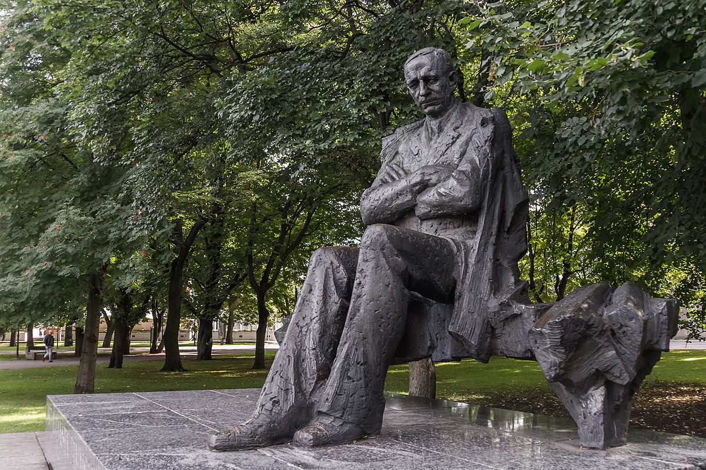

A. H. Tammsaare lühitutvustus
A. H. Tammsaare,kodanikunimega Anton Hansen; 30. jaanuar 1878 Albu vald, Järva-Madise kihelkond, Järvamaa – 1. märts 1940 Tallinn) oli eesti kirjanik, esseist, kultuurifilosoof ja tõlkija. Tema peateos on viieosaline romaanisari "Tõde ja õigus" ning teised tuntumad teosed on "Kõrboja peremees" (1922) ja "Põrgupõhja uus Vanapagan" (1939).
A. H. Tammsaare isiklik elu
Tammsaare oli abielus Käthe Hanseniga (neiuna Veltman; eluaastad 1896–1979). Käthe enda mälestuste järgi olevat ta esmakordselt kohtunud Anton Hanseniga siis, kui oli kõigest üheteistkümneaastane. See juhtus Käthe õemehe August Peeti korteris Narvas. Tüdrukule oli tollal juba tuntud kirjanik jätnud sügava mulje.
Sõja ajal kohtuti ajalehe Eesti Päevaleht toimetuses, kus Käthe töötas ning kuhu Tammsaare aeg-ajalt artikleid tuues sisse astus. Kuna mõlemad armastasid muusikat, sai sagedasemaks kohtumispaigaks Estonia kontserdisaal. Käthe Veltman ja Anton Hansen abiellusid 13. märtsil 1920 kell veerand üks, ehkki Käthe pani nende abiellumisest teatava kuulutuse lehte juba 7. juunil 1919 ning teavitas sellest omavolilisest teost samal päeval Anton Hansenit. See oli mõlema esimene abielu. Peigmehe tunnistajateks olid August Arras ja Rein Eliaser, pruudil August Hanko ja Anton Palvadre.
Neil sündisid kaks last: tütar Riita ja poeg Eerik. Riita sündis 17. veebruaril 1921, suri 25. juunil 2004. Eerik sündis 17. novembril 1928, suri 16. novembril 1981. Tammsaare tütrel Riital on tütar Riia, kellel oli poeg Kalle (1985–2006). Eerikul ei olnud lapsi. Kirjaniku järglaste liin on katkenud. Tema vennapoeg Arthur Hansen (1908–1944) oli metsateadlane ja Eesti sõjaväelane (lipnik).